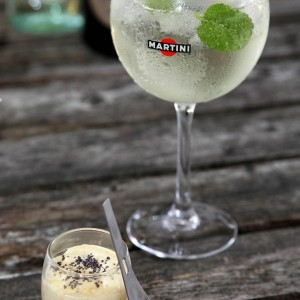

Verrine apéritive façon tiramisu de crevettes

Aujourd’hui me revoilà de retour avec une recette de verrine apéritive et pas n’importe laquelle car il s’agit de la toute première recette de verrine que j’ai pu faire (et ça remonte à au moins une bonne dizaine d’années!)
Je suis du genre fidèle et quand j’aime.. j’aime (un peu trop d’ailleurs)!!! Cette recette de verrine en est le parfait exemple! En effet, lorsque j’ai commencé à vraiment cuisiner toute seule comme une grande j’avais tout un tas d’idées de recettes et je voulais surtout que ce soit beau et bon alors je m’étais prise d’amour pour les verrines car je trouvais le concept assez sympa! Il faut dire qu’un verre miniature qui contient tout plein de bonnes choses et qui est carrément présentable pour l’apéritif ça avait vraiment tout pour me plaire!! Cette recette ça fait bien 10 ans maintenant que je la sers à la plupart de mes apéros et il fallait donc que je la partage avec vous de toute urgence!
Comme vous le savez, depuis le mois d’août je vous propose une recette spéciale pour l’apéritivo (l’apéritif à l’italienne) afin d’accompagner un cocktail Martini (cette fois-ci servie avec le Martini Royale Bianco c’était juste parfait!). L’apéritivo c’est un peu comme en Espagne à l’heure des tapas. Tout le monde se réunit, mange, déguste, boit, discute (fort), échange, partage et tout ça dans une ambiance vraiment chaleureuse et conviviale. C’est comme ça que j’aime prendre l’apéro moi aussi et c’était donc l’occasion toute trouvée pour vous parler de cette verrine apéritive façon tiramisu de crevettes.
Je vous avoue que je l’ai appelée tout bêtement « tiramisu » car la crème contient du mascarpone (trop facile^^) mais je n’étais pas moi-même convaincue quand je disais « voici des petites verrines tiramisu crevettes » jusqu’à il y a encore quelques jours… En effet, j’ai fait cette recette pour un ami qui ne l’avait jamais encore goûté en lui disant » je te laisse deviner ce que c’est ». Je vous laisse imaginer ma joie quand j’ai entendu « waouh c’est un tiramisu salé?? ». Bref pari gagné! Vous pourrez présenter cette verrine apéritive pour plein d’occasions et je n’ai jamais eu aucun mauvais retour alors vous pouvez y aller les yeux fermés (en plus c’est facile, rapide et plutôt joli^^).
Je vous laisse maintenant avec la recette et vous souhaite une belle semaine!!!
NB : Comme pour les autres recettes d’apéritivo toutes les photos de l’article sont les miennes à l’exception de la photo du cocktail (dans le corps de la recette) qui a été prise par le photographe de Martini : Olivier Hellard.
Retrouvez mes autres recettes d’apéritivo ici :
– Mini bagels – Arancini crevettes ail persil
Ingrédients
- Mascarpone - 200g
- Jaune d'oeuf - 3
- Petites queues de crevettes - 200g
- Pesto - environ 4càs
- Tuc ou crackers - environ 8
- Graines de pavot, baies roses, pignons de pins
Instructions
- Séparer les blancs des jaunes
- Garder les jaunes pour la recette (garder les blancs pour faire des meringues ou des macarons plus tard 😉 )
- Battre les jaunes avec une pincée de sel et ajouter le mascarpone pour obtenir un mélange bien homogène (vous pouvez faire ça dans un mixeur). Réserver au frais
- Mettre de côté une dizaine de queues de crevettes et mixer le reste. Quand vous mixez, mixer par à-coups car on ne veut pas une "purée de crevettes" non plus. (Personnellement j’achète les paquets de 200gr de petites queues de crevettes au rayon surgelé (que je décongèle avant) ce qui est parfait pour ça!
- Mélanger les crevettes mixées au mélange mascarpone-oeufs.
- Couper grossièrement les crevettes que vous avez gardées de côté
- Incorporez-les au mélange "mascarpone-oeufs-crevettes mixées". Réserver au frais
- Écraser les tucs (compter environ 8 tucs tout dépend de la texture que vous souhaitez obtenir)
- Mélanger les tucs au pesto Vous pouvez réadapter en ajoutant plus ou moins de pesto. Le but étant d'obtenir quelque chose d'homogène.
- Au fond de chaque verrine déposer et tasser légèrement la préparation pesto-tucs
- Par-dessus, ajouter le mélange mascarpone-crevettes (aidez-vous des photos pour avoir un équilibre dans la verrine)
- Laisser reposer au minimum 3h au frigo (vous pouvez les préparer la veille si vous voulez)
- Saupoudrer de graines de pavot et décorer comme vous le souhaitez (si vous trouver des minis tucs c'est pas mal d'en planter un dans chaque verrine. Pour la photo j'ai choisi de décorer avec des pignons de pin, des graines de pavot et quelques baies roses)
- - Déguster bien frais
- - Déguster bien frais

Les tips de la communauté
Verrines élégantes et raffinées, excellente idée apéritive avec saveurs bien équilibrées. Plusieurs lecteurs ont testé avec succès pour les fêtes.
Astuces
- Pesto donne une belle couleur et saveur
- Excellent pour apéritif ou fêtes de fin d'année
- Peut être préparé la veille pour meilleur résultat
- Crevettes roses petites donnent bonne taille de portion
- Conserver au frais jusqu'au service
Ajustements signalés
- Ne pas congeler, la crème ne sera pas bonne après et éléments se dégradent